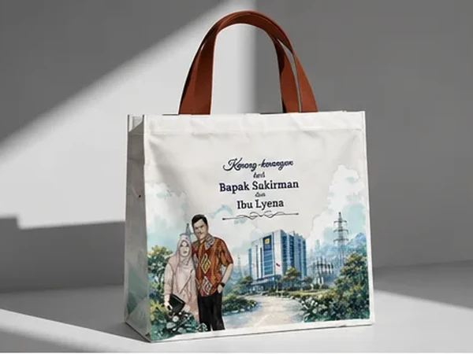
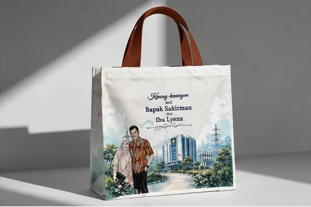

Goodie Bag Blacu: Karakteristik dan Pilihan untuk Souvenir

Goodie bag blacu dapat dipilih ketika acara membutuhkan tampilan kain yang sederhana, bernuansa natural, dan mudah dipadukan dengan identitas visual. Karakter warna, komposisi serat, ketebalan, dan permukaannya perlu diperiksa pada sampel aktual karena istilah blacu tidak menjelaskan seluruh spesifikasi kain secara menyeluruh.
Karakter yang Perlu Diperhatikan
Dalam spektrum bahan goodie bag, blacu menempati posisi unik di antara kepraktisan sintetis spunbond dan kemewahan tebal kanvas. Berasal dari tenunan benang katun mentah tanpa pemutih (greige fabric), kain blacu memiliki nuansa warna broken white krem lembut yang khas.
Berikut aspek fisik yang menentukan kualitas tas blacu:
- Kerapatan Tenunan: Blacu grade standar memiliki celah benang yang agak longgar, sedangkan blacu super atau twill memiliki kerapatan anyaman padat yang membuat tas kokoh dan tidak tembus pandang.
- Tekstur Permukaan: Bintik-bintik serat kapas halus pada permukaan blacu adalah penanda keaslian serat alami, bukan cacat kain atau kotoran.
- Interaksi Warna Sablon: Karena warna dasarnya krem alami (bukan putih salju), tinta sablon warna pastel atau kuning muda bisa sedikit terserap atau tergeser ronanya. Desain dengan warna kontras (hitam, cokelat tua, navy, hijau forest) akan tampak sangat estetis dan terbaca jelas.

Kesesuaian untuk Souvenir Acara
Goodie bag berbahan blacu sangat digemari untuk:
- Souvenir Pernikahan & Siraman: Memberikan kesan hangat, ramah tamah, dan bersahaja dengan desain line-art atau inisial kaligrafi.
- Seminar Lingkungan & Pariwisata: Merefleksikan komitmen sustainability instansi karena sifat katun yang dapat terurai secara alami (biodegradable).
- Merchandise Komunitas Seni & Budaya: Sangat cocok dikombinasikan dengan tali webbing katun tebal atau tali bisban warna senada.
Desain grafis dengan ruang kosong (negative space) yang proporsional akan menonjolkan karakter alami kain. Jika tas direncanakan untuk pemakaian jangka panjang, mintalah panduan pencucian kepada produsen. Seperti kebanyakan kain katun mentah, blacu berisiko menyusut 2–5% bila terkena air panas atau deterjen keras; hindari menjanjikan bahan tidak akan menyusut tanpa dilakukan pengujian sebelumnya.
| Kategori Kain Blacu | Perkiraan Gramasi | Kelebihan | Rekomendasi Pemakaian |
|---|---|---|---|
| Blacu Tipis (Grade C) | 90 – 110 gsm | Sangat lentur, murah, ringan | Pouch serut suvenir, pelindung dompet |
| Blacu Standar (Grade B) | 120 – 140 gsm | Kerapatan cukup, warna krem stabil | Totebag seminar, souvenir pernikahan |
| Blacu Super / Tebal (Grade A) | 150 – 170 gsm | Kerapatan tinggi, tidak terawang, kokoh | Tas belanja reusable, cinderamata instansi |
Pertanyaan Umum (FAQ)
Konsultasi Goodie Bag Blacu untuk Acara Spesial Anda
Kirim jumlah, spesifikasi, file logo, kota tujuan, dan tanggal penerimaan melalui WhatsApp untuk meminta pemeriksaan kebutuhan serta penawaran resmi.
Konsultasi via WhatsApp (+62 821-3108-7971)